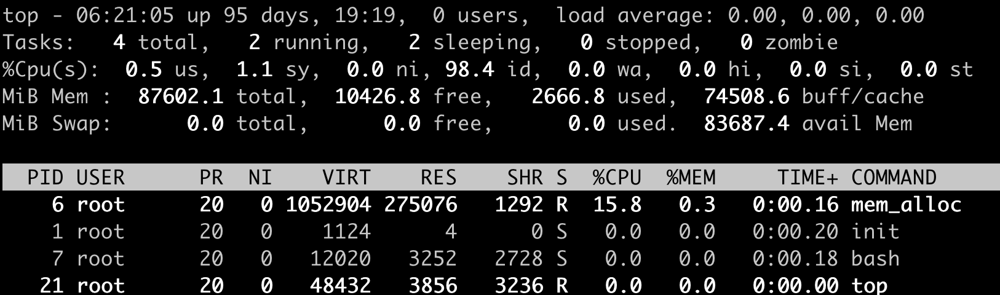
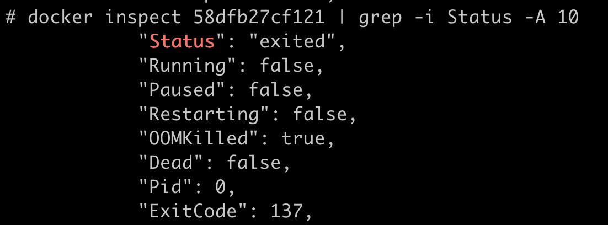
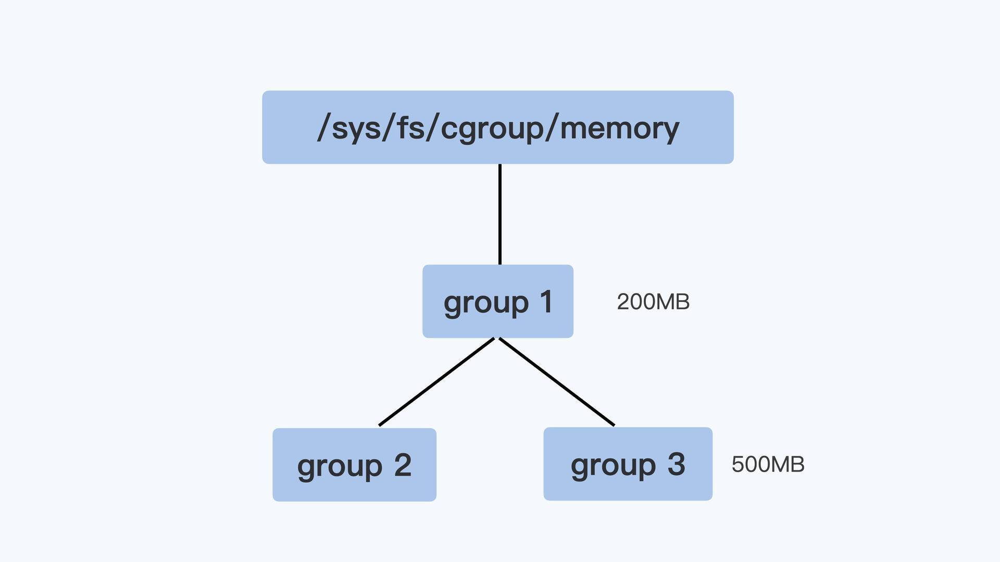
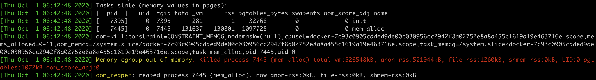
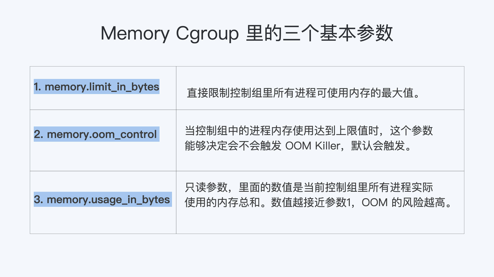

- 00 开篇词 一个态度两个步骤，成为容器实战高手.md.html
- 01 认识容器：容器的基本操作和实现原理.md.html
- 02 理解进程（1）：为什么我在容器中不能kill 1号进程？.md.html
- 03 理解进程（2）：为什么我的容器里有这么多僵尸进程？.md.html
- 04 理解进程（3）：为什么我在容器中的进程被强制杀死了？.md.html
- 05 容器CPU（1）：怎么限制容器的CPU使用？.md.html
- 06 容器CPU（2）：如何正确地拿到容器CPU的开销？.md.html
- 07 Load Average：加了CPU Cgroup限制，为什么我的容器还是很慢？.md.html
- 08 容器内存：我的容器为什么被杀了？.md.html
- 09 Page Cache：为什么我的容器内存使用量总是在临界点.md.html
- 10 Swap：容器可以使用Swap空间吗？.md.html
- 11 容器文件系统：我在容器中读写文件怎么变慢了.md.html
- 12 容器文件Quota：容器为什么把宿主机的磁盘写满了？.md.html
- 13 容器磁盘限速：我的容器里磁盘读写为什么不稳定.md.html
- 14 容器中的内存与IO：容器写文件的延时为什么波动很大？.md.html
- 15 容器网络：我修改了procsysnet下的参数，为什么在容器中不起效？.md.html
- 16 容器网络配置（1）：容器网络不通了要怎么调试.md.html
- 17 容器网络配置（2）：容器网络延时要比宿主机上的高吗.md.html
- 18 容器网络配置（3）：容器中的网络乱序包怎么这么高？.md.html
- 19 容器安全（1）：我的容器真的需要privileged权限吗.md.html
- 20 容器安全（2）：在容器中，我不以root用户来运行程序可以吗？.md.html
- 加餐01 案例分析：怎么解决海量IPVS规则带来的网络延时抖动问题？.md.html
- 加餐02 理解perf：怎么用perf聚焦热点函数？.md.html
- 加餐03 理解ftrace（1）：怎么应用ftrace查看长延时内核函数？.md.html
- 加餐04 理解ftrace（2）：怎么理解ftrace背后的技术tracepoint和kprobe？.md.html
- 加餐05 eBPF：怎么更加深入地查看内核中的函数？.md.html
- 加餐06 BCC：入门eBPF的前端工具.md.html
- 加餐福利 课后思考题答案合集.md.html
- 结束语 跳出舒适区，突破思考的惰性.md.html
08 容器内存：我的容器为什么被杀了？
你好，我是程远。
从这一讲内容开始，我们进入容器内存这个模块。在使用容器的时候，一定会伴随着 Memory Cgroup。而 Memory Cgroup 给 Linux 原本就复杂的内存管理带来了新的变化，下面我们就一起来学习这一块内容。
今天这一讲，我们来解决容器在系统中消失的问题。
不知道你在使用容器时，有没有过这样的经历？一个容器在系统中运行一段时间后，突然消失了，看看自己程序的 log 文件，也没发现什么错误，不像是自己程序 Crash，但是容器就是消失了。
那么这是怎么回事呢？接下来我们就一起来“破案”。
问题再现
容器在系统中被杀掉，其实只有一种情况，那就是容器中的进程使用了太多的内存。具体来说，就是容器里所有进程使用的内存量，超过了容器所在 Memory Cgroup 里的内存限制。这时 Linux 系统就会主动杀死容器中的一个进程，往往这会导致整个容器的退出。
我们可以做个简单的容器，模拟一下这种容器被杀死的场景。做容器的 Dockerfile 和代码，你可以从这里获得。
接下来，我们用下面的这个脚本来启动容器，我们先把这个容器的 Cgroup 内存上限设置为 512MB（536870912 bytes）。
#!/bin/bash
docker stop mem_alloc;docker rm mem_alloc
docker run -d --name mem_alloc registry/mem_alloc:v1
sleep 2
CONTAINER_ID=$(sudo docker ps --format "{{.ID}}\t{{.Names}}" | grep -i mem_alloc | awk '{print $1}')
echo $CONTAINER_ID
CGROUP_CONTAINER_PATH=$(find /sys/fs/cgroup/memory/ -name "*$CONTAINER_ID*")
echo $CGROUP_CONTAINER_PATH
echo 536870912 > $CGROUP_CONTAINER_PATH/memory.limit_in_bytes
cat $CGROUP_CONTAINER_PATH/memory.limit_in_bytes
好了，容器启动后，里面有一个小程序 mem_alloc 会不断地申请内存。当它申请的内存超过 512MB 的时候，你就会发现，我们启动的这个容器消失了。

这时候，如果我们运行docker inspect 命令查看容器退出的原因，就会看到容器处于"exited"状态，并且"OOMKilled"是 true。

那么问题来了，什么是 OOM Killed 呢？它和之前我们对容器 Memory Cgroup 做的设置有什么关系，又是怎么引起容器退出的？想搞清楚这些问题，我们就需要先理清楚基本概念。
如何理解 OOM Killer？
我们先来看一看 OOM Killer 是什么意思。
OOM 是 Out of Memory 的缩写，顾名思义就是内存不足的意思，而 Killer 在这里指需要杀死某个进程。那么 OOM Killer 就是在 Linux 系统里如果内存不足时，就需要杀死一个正在运行的进程来释放一些内存。
那么讲到这里，你可能会有个问题了，Linux 里的程序都是调用 malloc() 来申请内存，如果内存不足，直接 malloc() 返回失败就可以，为什么还要去杀死正在运行的进程呢？
其实，这个和 Linux 进程的内存申请策略有关，Linux 允许进程在申请内存的时候是 overcommit 的，这是什么意思呢？就是说允许进程申请超过实际物理内存上限的内存。
为了让你更好地理解，我给你举个例子说明。比如说，节点上的空闲物理内存只有 512MB 了，但是如果一个进程调用 malloc() 申请了 600MB，那么 malloc() 的这次申请还是被允许的。
这是因为 malloc() 申请的是内存的虚拟地址，系统只是给了程序一个地址范围，由于没有写入数据，所以程序并没有得到真正的物理内存。物理内存只有程序真的往这个地址写入数据的时候，才会分配给程序。
可以看得出来，这种 overcommit 的内存申请模式可以带来一个好处，它可以有效提高系统的内存利用率。不过这也带来了一个问题，也许你已经猜到了，就是物理内存真的不够了，又该怎么办呢？
为了方便你理解，我给你打个比方，这个有点像航空公司在卖飞机票。售卖飞机票的时候往往是超售的。比如说实际上有 100 个位子，航空公司会卖 105 张机票，在登机的时候如果实际登机的乘客超过了 100 个，那么就需要按照一定规则，不允许多出的几位乘客登机了。
同样的道理，遇到内存不够的这种情况，Linux 采取的措施就是杀死某个正在运行的进程。
那么你一定会问了，在发生 OOM 的时候，Linux 到底是根据什么标准来选择被杀的进程呢？这就要提到一个在 Linux 内核里有一个 oom_badness() 函数，就是它定义了选择进程的标准。其实这里的判断标准也很简单，函数中涉及两个条件：
第一，进程已经使用的物理内存页面数。
第二，每个进程的 OOM 校准值 oom_score_adj。在 /proc 文件系统中，每个进程都有一个 /proc/
adj = (long)p->signal->oom_score_adj;
points = get_mm_rss(p->mm) + get_mm_counter(p->mm, MM_SWAPENTS) +mm_pgtables_bytes(p->mm) / PAGE_SIZE;
adj *= totalpages / 1000;
points += adj;
结合前面说的两个条件，函数 oom_badness() 里的最终计算方法是这样的：
用系统总的可用页面数，去乘以 OOM 校准值 oom_score_adj，再加上进程已经使用的物理页面数，计算出来的值越大，那么这个进程被 OOM Kill 的几率也就越大。
如何理解 Memory Cgroup？
前面我们介绍了 OOM Killer，容器发生 OOM Kill 大多是因为 Memory Cgroup 的限制所导致的，所以在我们还需要理解 Memory Cgroup 的运行机制。
在这个专栏的第一讲中，我们讲过 Cgroups 是容器的两大支柱技术之一，在 CPU 的章节中，我们也讲到了 CPU Cgroups。那么按照同样的思路，我们想理解容器 Memory，自然要讨论一下 Memory Cgroup 了。
Memory Cgroup 也是 Linux Cgroups 子系统之一，它的作用是对一组进程的 Memory 使用做限制。Memory Cgroup 的虚拟文件系统的挂载点一般在"/sys/fs/cgroup/memory"这个目录下，这个和 CPU Cgroup 类似。我们可以在 Memory Cgroup 的挂载点目录下，创建一个子目录作为控制组。
每一个控制组下面有不少参数，在这一讲里，这里我们只讲跟 OOM 最相关的 3 个参数：memory.limit_in_bytes，memory.oom_control 和 memory.usage_in_bytes。其他参数如果你有兴趣了解，可以参考内核的文档说明。
首先我们来看第一个参数，叫作 memory.limit_in_bytes。请你注意，这个 memory.limit_in_bytes 是每个控制组里最重要的一个参数了。这是因为一个控制组里所有进程可使用内存的最大值，就是由这个参数的值来直接限制的。
那么一旦达到了最大值，在这个控制组里的进程会发生什么呢？
这就涉及到我要给你讲的第二个参数 memory.oom_control 了。这个 memory.oom_control 又是干啥的呢？当控制组中的进程内存使用达到上限值时，这个参数能够决定会不会触发 OOM Killer。
如果没有人为设置的话，memory.oom_control 的缺省值就会触发 OOM Killer。这是一个控制组内的 OOM Killer，和整个系统的 OOM Killer 的功能差不多，差别只是被杀进程的选择范围：控制组内的 OOM Killer 当然只能杀死控制组内的进程，而不能选节点上的其他进程。
如果我们要改变缺省值，也就是不希望触发 OOM Killer，只要执行 echo 1 > memory.oom_control 就行了，这时候即使控制组里所有进程使用的内存达到 memory.limit_in_bytes 设置的上限值，控制组也不会杀掉里面的进程。
但是，我想提醒你，这样操作以后，就会影响到控制组中正在申请物理内存页面的进程。这些进程会处于一个停止状态，不能往下运行了。
最后，我们再来学习一下第三个参数，也就是 memory.usage_in_bytes。这个参数是只读的，它里面的数值是当前控制组里所有进程实际使用的内存总和。
我们可以查看这个值，然后把它和 memory.limit_in_bytes 里的值做比较，根据接近程度来可以做个预判。这两个值越接近，OOM 的风险越高。通过这个方法，我们就可以得知，当前控制组内使用总的内存量有没有 OOM 的风险了。
控制组之间也同样是树状的层级结构，在这个结构中，父节点的控制组里的 memory.limit_in_bytes 值，就可以限制它的子节点中所有进程的内存使用。
我用一个具体例子来说明，比如像下面图里展示的那样，group1 里的 memory.limit_in_bytes 设置的值是 200MB，它的子控制组 group3 里 memory.limit_in_bytes 值是 500MB。那么，我们在 group3 里所有进程使用的内存总值就不能超过 200MB，而不是 500MB。

好了，我们这里介绍了 Memory Cgroup 最基本的概念，简单总结一下：
第一，Memory Cgroup 中每一个控制组可以为一组进程限制内存使用量，一旦所有进程使用内存的总量达到限制值，缺省情况下，就会触发 OOM Killer。这样一来，控制组里的“某个进程”就会被杀死。
第二，这里杀死“某个进程”的选择标准是，控制组中总的可用页面乘以进程的 oom_score_adj，加上进程已经使用的物理内存页面，所得值最大的进程，就会被系统选中杀死。
解决问题
我们解释了 Memory Cgroup 和 OOM Killer 后，你应该明白了为什么容器在运行过程中会突然消失了。
对于每个容器创建后，系统都会为它建立一个 Memory Cgroup 的控制组，容器的所有进程都在这个控制组里。
一般的容器云平台，比如 Kubernetes 都会为容器设置一个内存使用的上限。这个内存的上限值会被写入 Cgroup 里，具体来说就是容器对应的 Memory Cgroup 控制组里 memory.limit_in_bytes 这个参数中。
所以，一旦容器中进程使用的内存达到了上限值，OOM Killer 会杀死进程使容器退出。
那么我们怎样才能快速确定容器发生了 OOM 呢？这个可以通过查看内核日志及时地发现。
还是拿我们这一讲最开始发生 OOM 的容器作为例子。我们通过查看内核的日志，使用用 journalctl -k 命令，或者直接查看日志文件 /var/log/message，我们会发现当容器发生 OOM Kill 的时候，内核会输出下面的这段信息，大致包含下面这三部分的信息：
第一个部分就是容器里每一个进程使用的内存页面数量。在"rss"列里，"rss'是 Resident Set Size 的缩写，指的就是进程真正在使用的物理内存页面数量。
比如下面的日志里，我们看到 init 进程的"rss"是 1 个页面，mem_alloc 进程的"rss"是 130801 个页面，内存页面的大小一般是 4KB，我们可以做个估算，130801 * 4KB 大致等于 512MB。

第二部分我们来看上面图片的 "oom-kill:" 这行，这一行里列出了发生 OOM 的 Memroy Cgroup 的控制组，我们可以从控制组的信息中知道 OOM 是在哪个容器发生的。
第三部分是图中 "Killed process 7445 (mem_alloc)" 这行，它显示了最终被 OOM Killer 杀死的进程。
我们通过了解内核日志里的这些信息，可以很快地判断出容器是因为 OOM 而退出的，并且还可以知道是哪个进程消耗了最多的 Memory。
那么知道了哪个进程消耗了最大内存之后，我们就可以有针对性地对这个进程进行分析了，一般有这两种情况：
第一种情况是这个进程本身的确需要很大的内存，这说明我们给 memory.limit_in_bytes 里的内存上限值设置小了，那么就需要增大内存的上限值。
第二种情况是进程的代码中有 Bug，会导致内存泄漏，进程内存使用到达了 Memory Cgroup 中的上限。如果是这种情况，就需要我们具体去解决代码里的问题了。
重点总结
这一讲我们从容器在系统中被杀的问题，学习了 OOM Killer 和 Memory Cgroup 这两个概念。
OOM Killer 这个行为在 Linux 中很早就存在了，它其实是一种内存过载后的保护机制，通过牺牲个别的进程，来保证整个节点的内存不会被全部消耗掉。
在 Cgroup 的概念出现后，Memory Cgroup 中每一个控制组可以对一组进程限制内存使用量，一旦所有进程使用内存的总量达到限制值，在缺省情况下，就会触发 OOM Killer，控制组里的“某个进程”就会被杀死。
请注意，这里 Linux 系统肯定不能随心所欲地杀掉进程，那具体要用什么选择标准呢？
杀掉“某个进程”的选择标准，涉及到内核函数 oom_badness()。具体的计算方法是 ：系统总的可用页面数乘以进程的 OOM 校准值 oom_score_adj，再加上进程已经使用的物理页面数，计算出来的值越大，那么这个进程被 OOM Kill 的几率也就越大。
接下来，我给你讲解了 Memory Cgroup 里最基本的三个参数，分别是 memory.limit_in_bytes， memory.oom_control 和 memory.usage_in_bytes。我把这三个参数的作用，给你总结成了一张图。第一个和第三个参数，下一讲中我们还会用到，这里你可以先有个印象。

容器因为 OOM 被杀，要如何处理呢？我们可以通过内核日志做排查，查看容器里内存使用最多的进程，然后对它进行分析。根据我的经验，解决思路要么是提高容器的最大内存限制，要么需要我们具体去解决进程代码的 BUG。
思考题
在我们的例子脚本基础上，你可以修改一下，在容器刚一启动，就在容器对应的 Memory Cgroup 中禁止 OOM，看看接下来会发生什么？
欢迎留言和我分享你的想法和疑问。如果读完这篇文章有所收获，也欢迎分享给你的朋友。